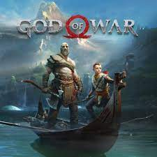

God Of War
بعد سنوات عديدة من هزيمة الآلهة الأولمبية، يعيش كراتوس مع ابنه أتريوس في عالم مدغارد وغالبًا ما يكون عدوانيًا وسلبيًا تجاهه. بعد حرق جثة فاي. يواجه كراتوس شخصًا غريبًا يتمتع بقوى إلهية. يبدو أن المعركتين وكراتوس يقتلان الغريب، وبعد ذلك يبدأ كراتوس وأتريوس رحلتهما لتكريم أمنية فاي الأخيرة: لنثر رمادها في أعلى قمة في العوالم التسعة. على طول الطريق، يواجهون ساحرة الغابة اللطيفة، التي تعترف بإلهية كراتوس.
Starfield
تدور أحداث Starfield في منطقة تمتد إلى الخارج من النظام الشمسي لحوالي 50 سنة ضوئية تسمى الأنظمة المستقرة. في حوالي عام 2310، تم تشكيل أكبر فصيلين في اللعبة، United Colonies وFreestar Collective، تشارك في صراع يسمى حرب المستعمرة. تجري أحداث اللعبة بعد 20 عامًا من الحرب، حيث تتمتع الفصائل الرئيسية بسلام غير مستقر. يتولى اللاعب دور شخصية قابلة للتخصيص وهي عضو في Constellation، منظمة مستكشفي الفضاء.
.jpeg)
Super Mario Odyssey
يختطف Bowser الأميرة Peach من مملكة الفطر ويأخذها على متن منطاده، عازمًا على الزواج منها قسراً. ماريو, تحاول أيضًا على متن السفينة إنقاذها ولكن تم طردها من السفينة بواسطة قبعة Bowser بعد قتال قصير وسقطت في Cap Kingdom المجاورة. مع رحيل ماريو، يدوس Bowser على قبعة ماريو ويتركها تنجرف إلى المراوح الخلفية للسفينة، مما يؤدي إلى تمزيقها إلى أشلاء. تم الاستيلاء على قطعة من القبعة بواسطة Cappy، أحد المخلوقات الواعية التي تشبه القبعة في Cap Kingdom والتي تسمى Bonneters. يلتقي الاثنان ويشرح لماريو أن باوزر اختطف أخته أيضًا، تاج، لاستخدامه كتاج زفاف الخوخ. ينضم Cappy إلى ماريو ويأخذ شكل قبعة ماريو، مما يوفر له القدرة على رمي قبعته والتقاط الكائنات والأشياء الأخرى مؤقتًا والاستفادة من قدراتها. يسافرون إلى مملكة كاسكيد القريبة، استرد منطادًا يسمى الأوديسة، وابدأ في مطاردة العربة.